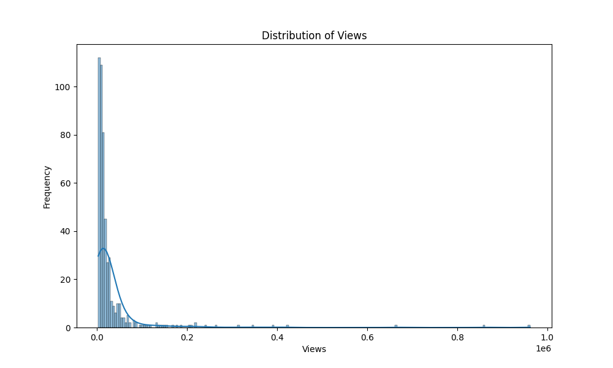
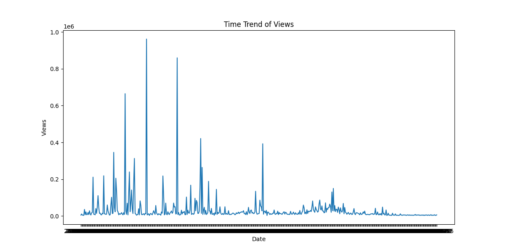

Our data has some amazing stories to tell! Let's take a peek:
| Views | |
|---|---|
| count | 500.000000 |
| mean | 31506.812000 |
| std | 77970.778996 |
| min | 2557.000000 |
| 25% | 7825.000000 |
| 50% | 13024.500000 |
| 75% | 25930.250000 |
| max | 961997.000000 |
Look at this rollercoaster of views! Some posts got lots of love, while others got a little. If we make the bars taller, we can see more details!
🌟 Pros: Shows us the ups and downs of views.
🌧️ Cons: Misses tiny details in the data. We can improve it by making the bars taller!
Travel through time and see how views changed. If the line goes up, it means more people liked our posts! To see details, we can make the line smoother.
🌟 Pros: Helps us spot trends and seasons.
🌧️ Cons: Might miss tiny changes or surprises. We can make the line smoother for a better view!
Imagine a cloud made of words! These are the jobs people talk about the most. Big words mean lots of talk about that job! Let's make the cloud even more magical by fixing a small issue.

🌟 Pros: Shows jobs we talk about a lot.
🌧️ Cons: Can't see how words are connected. Let's make it even more magical by fixing a small issue!
🌟 Wow! We've had a fantastic adventure exploring our data! 🌟